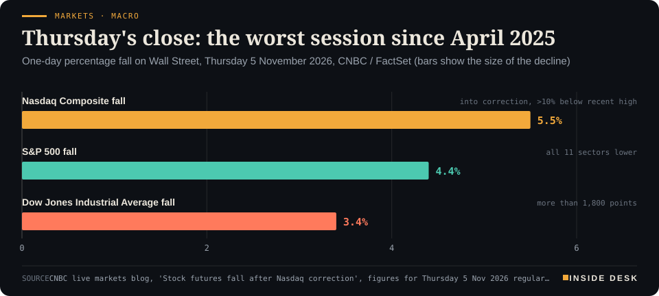
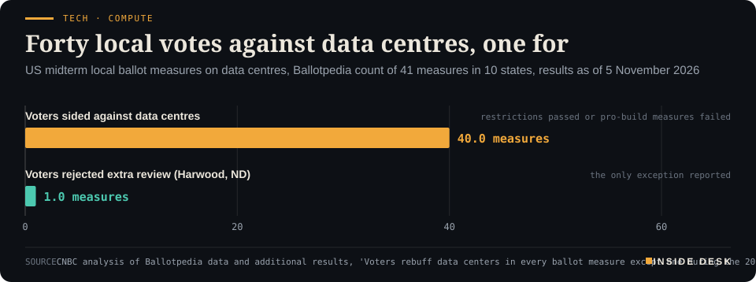

Inside Desk ePaper, Morning ePaper · Fri 6 Nov 2026
Friday, 6 November 2026Always free
Inside Desk
Morning ePaperAvailable 06:30 CET · Berlin
Lead · Markets & Macro
Wall Street's AI sell-off cut the S&P by about 4.4% and put the Nasdaq into a correction. Friday's US payrolls are the next number the committees will read.
Wall Street's AI sell-off cut the S&P by about 4.4% and put the Nasdaq into a correction; Friday's US payrolls are next. Elsewhere: the Bank of England at 4%, Friday's German power at €275.64, voters rejecting data centres in 40 of 41 local ballots, Europe's flight hoaxes, and a split map for winter sowing.
Wall Street had its worst day since April, the Bank of England raised to 4%, and the next hard number is this afternoon's jobs print.
Geo-economics · p. 4
Energy & Industry · p. 8
Climate & Weather · p. 14
The day in one sentenceWall Street had its worst day since April, the Bank of England raised to 4%, and the next hard number is this afternoon's jobs print.
ContentsInside Desk · Morning ePaper6 November 2026
Wall Street's AI sell-off cut the S&P by about 4.4% and put the Nasdaq into a correction; Friday's US payrolls are next. Elsewhere: the Bank of England at 4%, Friday's German power at €275.64, voters rejecting data centres in 40 of 41 local ballots, Europe's flight hoaxes, and a split map for winter sowing.
11 edition pieces · 11 desks · Available 06:30 CET, 6 November 2026
22 ePaper extras, added , 6 November. They appear only in the ePaper and carry their own time.
The website edition follows at 08:30.
The ePaper rhythm
06:30 Morning ePaper (website edition at 08:30)
17:30 Evening ePaper, updated live until 22:30 with an “Updated” time and a Latest page
Sun 10:00 The Sunday Magazine
Berlin time. Every issue is free.
How to read it
Swipe, use the arrow keys or the page strip. Tap any headline for the reading view. Press / to search, t for contents, +/− to zoom. Download the PDF.
LeadInside Desk · Morning ePaper6 November 2026
Markets & Macro · Lead · 3 min
Wall Street's AI sell-off cut the S&P by about 4.4% and put the Nasdaq into a correction. Friday's US payrolls are the next number the committees will read.
On Thursday Wall Street had its worst session since April 20251. The Nasdaq Composite fell about 5.5% and closed more than 10% below its recent high, which is the textbook definition of a correction1. The S&P 500 lost about 4.4%; the Dow fell more than 1,800 points, or about 3.4%1. All eleven sectors of the S&P finished lower1. Futures after the close pointed a little lower still1.
Markets · MacroThursday's close: the worst session since April 2025One-day percentage fall on Wall Street, Thursday 5 November 2026, CNBC / FactSet (bars show the size of the decline)

Bar chart of Thursday 5 November 2026 one-day percentage falls on Wall Street: Nasdaq Composite 5.5 percent (into correction territory), S&P 500 4.4 percent, Dow Jones Industrial Average 3.4 percent, per CNBC. The three major averages posted their worst session since April 2025, FactSet cited.
Source: CNBC live markets blog, 'Stock futures fall after Nasdaq correction', figures for Thursday 5 Nov 2026 regular session; FactSet cited for worst-since-April-2025 comparison; retrieved 6 Nov 2026 · reported figures · CSV
What the market was pricing. The trigger was not a surprise from a company. It was a reading of Tuesday’s midterms. Democrats’ gains in the House and Senate, and in statehouses such as Texas, revived traders’ fears that data-centre construction and the AI build-out could slow under tighter rules1,3. Shares tied to that build-out led the fall: Micron and Advanced Micro Devices each dropped about 17%, Nvidia about 9%, and the so-called Magnificent Seven lost more than $1 trillion of market value between them1. Nvidia turned negative for the year1. President Trump blamed the Democrats for “one of the Worst Days in History”; FactSet’s quieter label was simply the worst session since April 20251.
What travels overnight. By Friday morning in Asia the same story had a second chapter. South Korea’s Kospi plunged more than 6% at one point and later more than 8%, enough to trip circuit breakers; Japan’s Nikkei 225 fell into a bear market, more than 20% below its June peak1. Chip names from SK Hynix to TSMC and SoftBank were cut hard1. That is how a New York afternoon becomes a Tokyo morning: the same argument, a different opening bell. Europe closed mixed on Thursday — Spain up, Germany and Britain slightly down — before the full force of the Nasdaq session was in1.
What arrives at 14:30. The October US jobs report is due at 8:30 a.m. Eastern, 14:30 in Berlin2. Economists polled for the Dow Jones consensus expect about 59,000 nonfarm jobs and an unemployment rate still at 4.2%1,2. That would be sparse by the standards of a decade ago, and roughly in line with a labour market that has been adding only about 35,000 jobs a month on average since early 20252. Layoffs remain low — initial claims fell to 189,000 last week — while long-term unemployment has been rising2. Markets were pricing roughly a 70% chance of a quarter-point Federal Reserve rise on 9 December before the print1. The Bank of England, for its part, has already moved: Bank Rate is 4% as of Thursday [see Money].
The constructive reading. A one-day liquidation is loud; it is not yet a verdict on the machinery underneath. Payrolls, claims, openings and wages are duller, and they are what the Fed actually debates. Data-centre politics is real — voters rejected or restricted projects in 40 of 41 local ballot measures counted by Ballotpedia and CNBC3 — but a ballot measure is not a national ban, and a sell-off is not a statute. For you, the useful habit on a morning like this is narrow: wait for the jobs table before you rewrite the story of the week. The index tells you how scared people were at 22:00 Berlin time. The payrolls table tells you whether the labour market still looks like the one the committees have been describing. Nothing here is investment advice.
Geo-economicsInside Desk · Morning ePaper6 November 2026
Geo-economics · 2 min
Oil fell hard midweek on hopes that a Democratic Congress would curb escalation with Iran, then bounced. The futures price is not a peace treaty.
Brent crude settled at $98.29 a barrel on Thursday, up 3.8% on the day, after plunging more than 8% on Wednesday to its lowest settlement since 31 August1. West Texas Intermediate rose 2.7% to $90.521. Over about a week, Brent had still cheapened by roughly 12%, to around $97 earlier on Thursday, tagesschau reported, from levels above $117 two weeks earlier2.
The midweek drop was a political read: after Republican losses in the US midterms, investors cut the odds of further escalation in the US–Israeli war with Iran1,2. Eurasia Group trimmed its probability of renewed US strikes to 60% from 65%, cut the chance of a deal to 10% from 20%, and raised the chance of a continued standoff to 30% from 15%1. President Trump himself acknowledged that the war had played a role in the Republican defeat2.
Thursday’s bounce was the other half of the same ledger: fresh attacks on tankers and the plain fact that no ceasefire has been signed1. “The peace talks are currently confined largely to rhetoric,” Capital.com’s Kyle Rodda told German outlets2. Eurasia still puts a renewed escalation that could push Brent back into a $110–$125 range as a live risk1.
For Europe the channel is familiar. Dearer oil and gas feed fuel and power bills; cheaper oil eases them, with a lag. The useful habit is to treat a one-day percentage as a temperature, not a treaty. Nothing here is a forecast.
Geo-economics · Short item · ePaper extra, added
The political risk shop still sees escalation as the base case. A Democratic Congress changed the probabilities, not the war.
Eurasia Group lowered its estimated chance of renewed US strikes on Iran to 60% from 65% after the midterms, cut the probability of a deal to 10% from 20%, and raised the chance of a continued standoff to 30% from 15%1. It still warns that escalation could push Brent back into a $110–$125 range1.
Those are scenario weights from one shop, not odds you can buy. They matter because oil traders used a softer political read to dump crude midweek, then bought it back when tankers were attacked again1. Probability tables move faster than ceasefires.
Geo-economics · Brief · ePaper extra, added
Germany’s DAX printed a fresh intraday record near 26,692 on Thursday morning on cheaper oil and a 4.4% rebound in September factory orders, then faded as the US chip sell-off landed1,2. It closed down about 0.43%, with defence and technology among the soft spots; Spain’s IBEX led Europe higher even as Italy’s FTSE MIB fell about 1%1,2.
A record high and a down-close on the same day is not a paradox. It is a morning priced on European data and an afternoon priced on New York’s AI panic. Watch which open Europe chooses on Friday.
Markets & MacroInside Desk · Morning ePaper6 November 2026
Markets & Macro · Short item · ePaper extra, added
Asia opened into Thursday's AI sell-off. Japan is more than 20% below its June peak; South Korea paused trading.
Japan’s Nikkei 225 fell into a bear market on Friday, more than 20% below its June peak, as chip-related stocks tracked Wall Street’s AI sell-off overnight1. Advantest dropped about 12% and SoftBank about 11–12% in early accounts; Tokyo Electron and Kioxia were also hit hard1.
South Korea’s Kospi plunged more than 8% at one point, enough to trigger circuit breakers and a 20-minute trading halt, and slipped below the 5,000 mark1. SK Hynix fell more than 8%, Samsung Electronics about 7%, and Taiwan’s TSMC about 9.6% as the same argument moved from New York to Asia1.
A bear market label is a distance from a peak, not a forecast. The common thread is the midterm read on data-centre rules and the chip chain that supplies them1. Nothing here is investment advice.
Markets & Macro · Brief · ePaper extra, added
The seven megacap technology names that markets call the Magnificent Seven lost more than $1 trillion of combined market value in Thursday’s session1. Nvidia led, down more than 9% and more than $440 billion lighter, turning negative for 20261. Tesla fell about 10.8%, Meta about 3.9%, Microsoft about 3.6%, Alphabet and Amazon about 2.2% each, and Apple about 1.5%1.
Micron and AMD each dropped about 17%; CoreWeave about 10%1. The point for a non-trader is concentration: when a handful of balance sheets carry so much of an index, a single political read on data centres moves a trillion dollars before Europe’s morning coffee1. That is a fact about market structure, not a tip.
Politics & InstitutionsInside Desk · Morning ePaper6 November 2026
Politics & Institutions · 2 min
Data centres lost almost every midterm ballot that named them. The politics has now moved from zoning meetings to the next Congress.
Forty-one local ballot measures about data centres were on US midterm ballots across ten states1. Voters sided against data centres in every contest with results in hand except one: Harwood, North Dakota, where they rejected an added review of industrial projects1. Ohio alone accounted for 21 of the measures1. In a CNBC voter poll, 56% said data centres were a crucial or major factor in their decision1.
The top of the ticket moved with the same current. In Ohio, Democrat Sherrod Brown defeated Senator Jon Husted after casting him as “the face of data centres”, and Amy Acton won the governorship on a platform that includes a “conditional moratorium” unless projects cover 100% of utility costs and use union labour1. In Texas, Gina Hinojosa unseated Greg Abbott after blaming the data-centre build-out; she said on Thursday that deals with firms such as Elon Musk’s would have to be “on our terms” and asked for a pause on a public-land sale tied to SpaceX1.
Within hours of the polls closing, Rep. Greg Casar said AI company CEOs “should be called to testify under oath”, and Rep. Robert Garcia, the presumptive next House Oversight chair, put it in two words: “Lawyer up”1. Silicon Valley spent heavily and still lost the races that mattered most on this issue1.
The constructive reading is institutional, not apocalyptic. Local ballots, governors and congressional hearings are how a democracy digests a new industry’s land, water and power claims. They are slow on purpose. Watch the docket, not only the share prices.
Politics & Institutions · Short item · ePaper extra, added
Texas's governor-elect campaigned against unchecked data centres. On Thursday she said the relationship can continue — with conditions.
Gina Hinojosa, Texas’s governor-elect, told CNN that Democrats could still have a “strong working relationship” with Elon Musk and his companies, but that deals would have to be done “on our terms”1. As a candidate she made AI data-centre regulation a focus and said the state should stop the current build-out “until we have measures to protect Texans”1. On Thursday she also asked Texas Parks and Wildlife to pause talks on a public-land sale that would help SpaceX expand Starbase1.
Tesla and SpaceX are both headquartered in Texas; they are jointly developing a chips factory and data centre at Terafab in Grimes County1. A governor who can pause a land sale and set permit conditions is more consequential for the build-out than a single day’s share price2.
Rep. Greg Casar, chair of the Congressional Progressive Caucus, said after Democrats were projected to win the House that AI company CEOs “should be called to testify under oath” and that protecting jobs, freedom and lives from “AI billionaires” should be a top majority priority1. Rep. Robert Garcia, the presumptive next House Oversight chair, summarised the message to executives in two words: “Lawyer up”1.
Hearings are not statutes. They are how a chamber sets the agenda for the statutes that follow. Casar called the data-centre revolt “the early tremor of a much bigger AI earthquake”1. Watch whether the first subpoenas match the first quotes.
Psychology & BehaviourInside Desk · Morning ePaper6 November 2026
Psychology & Behaviour · 2 min
Researchers at Bath and Frankfurt have built the first validated scale for attitudes to switching off. Wanting a break is common; taking one is a different study.
The document. “In Favour of Digital Detox: Developing the Attitude Towards Digital Detox Scale”, by Svenja Winkler, Lisa Eckmann, Torsten Bornemann and Jan R. Landwehr, in Psychology & Marketing1. The team spans the University of Bath and Goethe University Frankfurt1.
The line. Across seven studies the researchers built and validated a seven-item scale that measures how positively people view a temporary cut in digital use1. More than eight in ten participants viewed a “digital detox” positively — evidence, the authors say, of a widespread latent wish to switch off — though the work did not test whether those people then did so1. Attitude scores linked to traits such as mindfulness and self-control, and predicted how much time people spent watching online videos in the study setting1.
The lines around it. Prof. Jan Landwehr puts the motive plainly: many people feel overwhelmed by the constant flow of digital information and want to disconnect; the scale makes that “vague positive attitude” measurable1. Prof. Torsten Bornemann says the next use is practical: when and why people want to cut back, and whether a change in attitude helps them take more control1. Samples included US adults on research platforms, central European students, Reddit communities and consumer-behaviour experts1.
The caveats. Liking the idea of a detox is not detoxing. The press release is clear that behaviour change was not measured1. Attitudes can flatter; evenings with the phone still win.
The constructive reading. If eight in ten already approve of a pause, the scarce resource is not motivation slogans. It is design: notification defaults, library quiet hours, school phone policies, and a calendar block that treats an hour offline as an appointment. The scale gives researchers something sharper than a vibe. For you, the cheaper experiment still works: pick one window this weekend, put the phone in another room, and see whether the wish survives contact with boredom.
Psychology & Behaviour · Short item · ePaper extra, added
Frankfurt and Bath researchers turned 'I should detox' into something you can score. Most people already approve.
Prof. Jan Landwehr of Goethe University says many people feel overwhelmed by the constant digital flow and want to disconnect; his team with Bath colleagues built the Attitude towards Digital Detox scale to make that “vague positive attitude” measurable1. More than eight in ten participants viewed a temporary cut in digital use positively1.
The scale predicted how long people watched online videos in the study, and tracked with mindfulness and self-control1. It did not measure whether anyone then took a break1. Wanting a detox is common; designing one into the week is still the scarce skill.
Prof. Torsten Bornemann, co-author of the digital-detox attitude scale, says it can now be used to study when and why people want to cut digital use — and whether a changed attitude helps them take more control of technology1. That is the bridge from survey to habit.
Seven studies built the tool across US panels, European students, Reddit communities and consumer-behaviour experts1. The paper sits in Psychology & Marketing1. For a newsroom reader the implication is plain: stop asking whether people “know” screens are tiring. Ask which defaults, calendars and rooms make the approved break happen.
Energy & IndustryInside Desk · Morning ePaper6 November 2026
Energy & Industry · 2 min
Germany's day-ahead average is the dearest since 29 October. The cheapest hour of the day would still have been an expensive whole day in September.
Electricity for delivery in Germany and Luxembourg on Friday 6 November averages €275.64 per megawatt hour on the day-ahead market, according to SMARD1. That is €18.26 above Thursday’s €257.38 and the highest daily average since the €314.85 of Thursday 29 October1.
Energy · PowerFriday clears €275, the dearest day since 29 OctoberGermany/Luxembourg day-ahead electricity price, daily average by delivery day, € per MWh
Line chart of the daily average German-Luxembourg day-ahead electricity price from 1 September to 6 November 2026, in euros per megawatt hour. It falls to €30.12 on Saturday 24 October and €13.12 on Sunday 25 October, then climbs to €314.85 on Thursday 29 October. From late October most delivery days stay near or above €250; Thursday 5 November is €257.38 and Friday 6 November is €275.64, the highest daily average since 29 October.
Source: Bundesnetzagentur | SMARD.de, day-ahead price DE-LU (filter 4169), delivery days 1 Sep to 6 Nov 2026, retrieved 6 Nov 2026 · CC BY 4.0 · CSV
The shape. Prices climb from €229.65 at 05:00 to €323.06 at 07:00, ease to €226.97 at noon, then rise into the evening and peak at €357.12 from 18:001. The spread between the dearest and cheapest hour is €134.741.
The floor. Friday’s cheapest hour, €222.38 at 03:00, would have been a dear whole day in September: only two September delivery days averaged more1. Desk arithmetic: Friday’s average is about 1.9 times September’s €144.821. A high peak says a few hours are tight. A high floor says the system is expensive even when demand is lowest.
Most households do not pay the day-ahead price directly. If you have a dynamic tariff, the least-bad windows remain the small hours and the midday trough; the 17:00–20:00 block is where a dishwasher or an electric car costs the most1. The auction publishes around noon every day. It is one of the freest useful documents in the country. Nothing here is investment advice.
Energy & Industry · Short item · ePaper extra, added
Friday's hourly curve shows why the average alone misleads: the evening peak and the 03:00 trough are different markets.
Friday’s day-ahead peak for Germany/Luxembourg is €357.12 in the hour from 18:001. The morning hump reaches €323.06 at 07:00; noon eases to €226.97; the night floor is €222.38 at 03:001. The dearest-to-cheapest spread is €134.741.
If your tariff tracks the auction, those four numbers matter more than the €275.64 average1. Run the flexible load through the troughs; treat 17:00–20:00 as dear unless you have no choice. The auction is free and daily.
Energy & Industry · Brief · ePaper extra, added
September’s average day-ahead price for DE-LU was about €144.82 per megawatt hour1. Friday 6 November clears at €275.64 — roughly 1.9 times that level1. Every delivery day since 29 October has sat near or above €250 except Wednesday’s €248.991.
Households on fixed tariffs feel this through their supplier’s hedging, not overnight. Dynamic tariffs feel it by the hour. Either way, the autumn ledger is open: nights are no longer cheap by September’s standard1.
Money, FX & CommitteesInside Desk · Morning ePaper6 November 2026
Money, FX & Committees · Podium vs Print · 2 min
Eight members of the Bank of England raised Bank Rate to 4%. One wanted 4.25%. The minutes show both the insurance hike and the dissent in the same room.
Podium
“It is essential to communicate, and for markets to understand, that, as of now, this is not the start of a hiking cycle: policy isn't on a pre-set, unconditional path.”
Alan Taylor, external member of the Monetary Policy Committee, in the published minutes, Meeting ending 4 November 2026; minutes published 5 November 2026
Print+50 bp
Preferred a 0.5 percentage-point rise to 4.25%, citing non-linear inflation risks and a credibility threshold.
Catherine L Mann, external member of the Monetary Policy Committee, recorded dissent, Same meeting; minutes published 5 November 2026
The podium. The Bank of England raised Bank Rate by a quarter point to 4% on Thursday, its first increase since August 20231. The vote was 8–11. In the minutes, Alan Taylor was careful about the label: this was “a risk-management ‘one-for-now’ insurance hike”, not “the start of a hiking cycle”, and “the next move could be up, down, or sideways”1. Andrew Bailey, the governor, said the case for 25 basis points now was clear, and that without softer news on energy he could “see the argument for a further increase” before taking a more conditional approach1. The summary line that markets will repeat is shorter still: “Monetary policy is not on a pre-set path”1.
The print. Catherine L Mann voted for 50 basis points, to 4.25%1. CPI was 3.5% in September and is expected to reach around 5% by mid-2027; Mann puts mid-2027 at 4.9%, about 25 basis points higher without the latest Budget measures1. She says the economy has crossed thresholds where households and firms respond non-linearly, and that a larger step is “good policy” from a credibility view1. That is a recorded dissent, not a mood.
The gap. Both camps agree on the diagnosis: energy prices have risen further with the Middle East conflict in its ninth month, and the risk of second-round effects has grown even though evidence is still limited1. They disagree on the dose. Eight judged 25 basis points enough for now; Mann judged the risk of the smaller step larger than the risk of over-tightening1. Taylor’s “not a cycle” and Mann’s “+50” can hang on the same wall.
What it means for you. Tracker mortgages and savings rates move with Bank Rate; fixed deals move when they are refinanced1. The useful reading is that a committee of nine disagreed in public, published it the next day, and meets again on 17 December1. Nothing here is advice about your mortgage.
Money, FX & Committees · Short item · ePaper extra, added
The governor joined the 25-basis-point majority, then named the condition for the next step.
Andrew Bailey voted with the majority for a quarter-point rise to 4%1. Without softer news on energy — real progress towards settling the Middle East conflict — he can “see the argument for a further increase” before a more conditional approach1. Energy first; then pay and prices.
Money, FX & Committees · Brief · ePaper extra, added
UK CPI was 3.5% in September and is now expected to rise to around 5% by mid-2027 before falling back as energy base effects fade and restrictive policy bites1. Members still see “limited evidence” of second-round effects on wages and other prices, even as they judge that risk has risen — the tension behind an 8–1 vote for 25 basis points rather than 501.
Ordinary & Inherited LifeInside Desk · Morning ePaper6 November 2026
Ordinary & Inherited Life · 2 min
Friday's early national averages are a few cents below this week's midweek prints. A tankful is still a three-figure bill.
The ledger.
- Super E10, national average of open stations reporting to the federal price register this morning: €1.974 a litre1.
- Diesel: €2.212 a litre1.
- Super E5: €2.029 a litre1.
- Midweek comparison: on Wednesday the ADAC put the national E10 average at €2.041 and diesel at €2.260, both lower than a week earlier2.
- Desk arithmetic: a 50-litre tank of E10 at this morning’s average costs about €98.70; the same tank of diesel about €110.60. Against Wednesday’s ADAC averages that is roughly €3.35 less for E10 and €2.40 less for diesel, if the early print holds.
Early-morning averages are snapshots. Prices move by station, brand and hour, and they often firm after midday1. Brent’s slide earlier this week is the wholesale backdrop; the pump is where it either arrives or does not2. Nothing here is advice about when to fill up — only a record of what the register showed before breakfast.
Ordinary & Inherited Life · Short item · ePaper extra, added
Early national pump averages are a few cents kinder than midweek. They often firm after noon.
Super E10 averaged €1.974 a litre across open German stations early on Friday; diesel €2.212; Super E5 €2.0291. Desk arithmetic: 50 litres of E10 is about €98.70, and 50 litres of diesel about €110.60. Wednesday’s ADAC national averages were €2.041 and €2.2602.
Use the federal register, not a single app screenshot, and remember the midday lift1. A cheaper barrel of Brent helps only when it reaches your forecourt. Early prints are maps; your station is a place.
Ordinary & Inherited Life · Brief · ePaper extra, added
Germany’s temporary cut in fuel tax runs to the end of 20261. The ADAC’s midweek note on falling petrol and diesel prices treated cheaper Brent and that tax relief as the twin reasons the national averages eased1. When the cut expires, the same wholesale price implies a higher sticker at the pump unless something else gives.
Mark the diary for January tariffs and January forecourts. Policy calendars move bills as surely as tankers do. A temporary cut that people get used to is still temporary when the statute says so.
Tech & ComputeInside Desk · Morning ePaper6 November 2026
Tech & Compute · 2 min
Local America spent Tuesday voting on data centres. Almost every measure that named them went the same way. The chip sell-off is the market's loud echo of a quiet zoning fight.
There were 41 data-centre ballot measures in ten US states on Tuesday1. Voters backed restrictions or rejected pro-development measures in 40 of them; Harwood, North Dakota, was the exception1.
Tech · ComputeForty local votes against data centres, one forUS midterm local ballot measures on data centres, Ballotpedia count of 41 measures in 10 states, results as of 5 November 2026

Bar chart of 41 local US ballot measures about data centres in the 2026 midterms: voters sided against data centres in 40 contests, and rejected an added review of industrial projects including data centres in one contest in Harwood, North Dakota, the only exception reported by CNBC on Ballotpedia data as of 5 November 2026.
Source: CNBC analysis of Ballotpedia data and additional results, 'Voters rebuff data centers in every ballot measure except one during the 2026 midterms', updated 5 Nov 2026, 1:08 p.m. ET · reported figures · CSV
Ohio carried more than half the list1. SoftBank and SB Energy are developing what would be the world’s largest planned AI campus there, with OpenAI saying it has secured 8 gigawatts at the PORTS-Pike site and Nvidia backstopping a project that could cost more than $500 billion1. That plan now faces a Democratic governor-elect who wants projects to cover 100% of utility costs and use union labour1. Texas, on track to become the world’s largest data-centre market by 2030 on some forecasts, flipped its governorship on the same issue1.
Thursday’s chip rout was the financial translation of that politics: traders sold the build-out chain on the fear that permits and hearings will slow demand for servers and power gear2. The constructive point is narrower. Communities are using ordinary tools — ballots, utility-cost rules, labour conditions — to price local burdens into the boom. That is slower than a press release and more durable than a mood. Nothing here is investment advice.
Tech & Compute · Short item · ePaper extra, added
The largest planned AI campus still has SoftBank, SB Energy, the Energy Department and Nvidia behind it. Amy Acton campaigned for conditions.
OpenAI says it has secured 8 gigawatts of computing capacity at the PORTS-Pike Technology Campus in Ohio — described as the largest planned AI data-centre campus in the world — with first-phase construction due to start this year and capacity from 20281. SoftBank and SB Energy are developing it with the US Energy Department; Nvidia is backstopping a project that could cost more than $500 billion1.
Governor-elect Amy Acton supports a “conditional moratorium” unless projects cover 100% of utility costs and use union labour1. Megawatts on a slide are not megawatts on a grid. The permit is the plot.
Tech & Compute · Brief · ePaper extra, added
CNBC’s FEC analysis found that 14 of the 20 largest midterm donor groups backed Republicans almost exclusively, with crypto, AI and online-gambling interests pouring in more than $377 million1. Elon Musk spent at least $474 million, nearly half in Texas, and lost both of that state’s marquee races1. His post-election line on X: “Data centers in space looking pretty appealing right now”1.
Money bought airtime. It did not buy the 40 local ballot outcomes that went against data centres1. That gap is the political fact under Thursday’s chip rout.
Health & CareInside Desk · Morning ePaper6 November 2026
Health & Care · 2 min
Britain's pharmacists say blood-pressure, cancer and hormone medicines are running short as Hormuz disruption lengthens shipping times. The protocol is the dull tool that keeps the shelf honest.
Britain imports around three-quarters of its medicines2. The Independent Pharmacies Association has warned that blood-pressure and cancer treatments are running short as the Iran war and the Hormuz blockade add days to air-freight and raise shipping costs1,2. Among products on the official shortage list shared with pharmacists are Lenzetto, a widely used HRT spray, and Propranolol, a beta-blocker for blood pressure, angina and abnormal rhythms2.
The sharpest administrative tool in the present wave is a Serious Shortage Protocol on Ramipril 1.25 mg capsules, an ACE inhibitor dispensed more than 30 million times in England in 20251. The protocol lets community pharmacies limit dispensing to one month’s supply per prescription, overriding the usual multi-month routines, while tablet and liquid forms remain available for now1. Other active notifications cover Propranolol modified-release capsules (immediate-release tablets still available), co-codamol, diamorphine injections and several specialist items1.
Dr Leyla Hannbeck of the IPA says pharmacies are often forced to source scarce packs at a loss1. The Royal College of GPs has backed giving pharmacists limited power to adjust prescriptions without a fresh GP letter each time a pack disappears1.
For you, the useful moves are ordinary: order repeats a little earlier than usual, ask the pharmacist what is substitutable, and do not stockpile beyond what your clinician advises — hoarding is how a tight list becomes a worse one1,2. The protocol is paperwork. Paperwork is how a strained supply chain stays fair.
Health & Care · Short item · ePaper extra, added
England's most-dispensed ACE inhibitor is under emergency dispensing rules. Tablet and liquid forms are the bridge for now.
The Department of Health and Social Care has issued a Serious Shortage Protocol for Ramipril 1.25 mg capsules, limiting community pharmacies to one month’s supply per prescription1. More than 30 million Ramipril items were dispensed in England in 20251. Alternative tablets and oral solutions remain available, though officials warn surging demand could strain those too1.
A protocol is how the system rations fairly without leaving it to whoever arrives first. Ask your pharmacist before you assume a multi-month repeat will fill as usual.
Health & Care · Brief · ePaper extra, added
Lenzetto, an HRT spray for hot flushes and night sweats, and Propranolol, used for blood pressure, angina and abnormal rhythms, are among medicines on the official UK shortage list pharmacists use to manage stock1. Britain imports about three-quarters of its drugs; Hormuz disruption has lengthened air-freight times and raised costs even for medicines finished in Europe from Asian ingredients1,2.
The IPA wants ministers to review hoarding restrictions and give pharmacists more flexibility to adjust prescriptions when a pack vanishes1,2. The patient habit that helps rather than harms: order a little early, do not clear the shelf.
Security & OrderInside Desk · Morning ePaper6 November 2026
Security & Order · 2 min
A second day of hoax alerts forced diversions and fighter escorts across Europe. Nothing explosive was found. The system still has to pretend each one might be.
At least 34 flights across Europe were disrupted by bomb threats on Thursday, after seven similar alerts on Tuesday and one on Monday1. Aircraft from Ryanair, Aer Lingus, Wizz Air, Finnair, easyJet, Aegean, Iberia, Air Serbia and LOT were among those affected; all landed safely and searches found nothing suspicious1. Heathrow judged a threat “not credible”; Birmingham initiated full processes with emergency services1,2. Eurocontrol had about 27,400 flights scheduled in Europe that day — the disrupted share was tiny and expensive1.
Fighter jets escorted aircraft in Italian, Austrian and Bulgarian airspace1,2. An Aer Lingus Dublin–Rome flight diverted to the Évreux military base in Normandy; passengers waited hours through sniffer-dog checks1,2. UK transport secretary Heidi Alexander called the wave a “malicious hoax”2. Italy’s defence minister, Guido Crosetto, called the pattern “under-threshold warfare”: designed to stay below the attribution line1. Investigators said publicly there was still no hard evidence of a hostile state behind the alerts1,2.
Philip Baum, professor of aviation security at Coventry, notes that aviation faces multiple bomb threats every day, but that this week’s feel different because authorities have classified them as specific2. The risk he flags is complacency: enough hoaxes, and a real one is harder to hear2.
The constructive reading is unglamorous. Diversions, escorts and empty searches are the price of not guessing. Attribution will take longer than a news cycle. Until then, the right boring answer is the one already in force: treat the specific threat as real, clear the cabin, publish that it was empty, and keep the next flight’s checklist unchanged.
Security & Order · Short item · ePaper extra, added
Two UK airports got threats on the same morning and ran different published playbooks. Both are how a system absorbs hoaxes.
London Heathrow said a Thursday threat was “deemed not credible” and posed no risk to passengers, staff or aircraft1,2. Birmingham Airport said it received a threat and “immediately” started processes with emergency services and partners; a Jet2 departure returned to stand and passengers moved to a replacement aircraft after nothing was found1.
Different words, same duty: assess, act in proportion, say what you did. The Met’s aviation command monitored four Heathrow-related aircraft threats and identified “no security issues” after assessment2. Transparency after a hoax is part of the deterrent.
Security & Order · Brief · ePaper extra, added
Nick Careen, Iata’s senior vice-president for operations, safety and security, condemned the hoax wave and urged authorities to “find the origins” while assuring passengers that security measures remain in force1. Eurocontrol had about 27,400 flights scheduled in Europe on Thursday; the dozens disrupted were a fraction of that total and still costly in fuel, crews and trust1.
Attribution is the hard part of under-threshold harassment. Until it arrives, the industry’s correct boring answer is unchanged checklists and public empty-handed searches.
Climate & WeatherInside Desk · Morning ePaper6 November 2026
Climate & Weather · 2 min
The harvest is nearly done and yields sit below the five-year average for most crops. The next problem is getting the winter crop into the ground at all.
The European Commission’s crop monitors say the 2026 harvest is drawing to a close and that field work is well advanced across most of Europe1. Yield forecasts have barely moved since late September and remain below the five-year average for most crops, with some further slight downward revisions where dry soils cut yields and delayed bringing the crop in1.
The new story is autumn planting. Persistently low soil moisture across parts of western, central and south-eastern Europe is hampering rapeseed emergence and raising worries for winter cereals1. France, southern Belgium, Luxembourg and southern Germany are named for patchy rapeseed stands; eastern Germany and Poland need meaningful rain for establishment; sowing has been slow in parts of France and the Benelux1. Recent rain helped southern Germany, but more is needed1.
Farther north the problem flips. Prolonged rainfall in the Baltic states and Finland has waterlogged soils, stalling winter sowing and locally blocking the last of the harvest1. With the planting window closing, some winter area is expected to shrink in favour of spring crops1. Ireland, for once, is the quiet success: an almost perfect autumn for oilseed rape and cereals1.
Forecast rain may yet improve moisture across much of the continent, while drier spells could help the waterlogged north1. For you, the link to the shop is lagged and indirect — feed, flour and oilseed prices move on balances, not on one dry field. The useful reading is institutional: MARS bulletins, national sowing progress and the insurance that covers a failed establishment are how a continent manages weather that will not average out.
Climate & Weather · Short item · ePaper extra, added
While France fights dry seedbeds and the Baltics fight mud, Irish winter rape and cereals are described as well established.
The European Commission’s crop monitors, as reported by Agriland, say Irish tillage farmers have enjoyed an almost perfect autumn planting season, with winter oilseed rape and cereals now well established1. That sits beside patchy rapeseed in France, southern Belgium, Luxembourg and southern Germany, and waterlogged standstills in the Baltics and Finland1.
Weather averages hide maps. One island’s good autumn does not lift a continent’s below-average yields, but it does show establishment is still possible when rain and trafficability arrive together1.
Climate & Weather · Brief · ePaper extra, added
Persistent rain has brought winter-crop sowing to a standstill in parts of the Baltic states, the Commission monitors say, and with the planting window about to close the winter area is expected to decrease, some fields shifting to spring crops1. Finland faces the same waterlogging drag on late harvest and sowing1.
A hectare that misses winter wheat is not gone; it is re-timed. The balance sheet shifts towards spring barley and other substitutes, with yield and price effects that show up months later in feed and flour markets1. Watch the next MARS update for how large that shift is.
Charts and dataInside Desk · Morning ePaper6 November 2026
Charts and data
Energy · PowerFriday clears €275, the dearest day since 29 OctoberGermany/Luxembourg day-ahead electricity price, daily average by delivery day, € per MWh
Line chart of the daily average German-Luxembourg day-ahead electricity price from 1 September to 6 November 2026, in euros per megawatt hour. It falls to €30.12 on Saturday 24 October and €13.12 on Sunday 25 October, then climbs to €314.85 on Thursday 29 October. From late October most delivery days stay near or above €250; Thursday 5 November is €257.38 and Friday 6 November is €275.64, the highest daily average since 29 October.
Source: Bundesnetzagentur | SMARD.de, day-ahead price DE-LU (filter 4169), delivery days 1 Sep to 6 Nov 2026, retrieved 6 Nov 2026 · CC BY 4.0 · CSV
Latest values
Series
Value
Date
Chart
Day-ahead DE-LU
275.64
6 Nov 2026
Friday clears €275, the dearest day since 29 October
Last data point of each series in the charts above, from the Inside Desk data archive. Sources under each chart.
Back pageInside Desk · Morning ePaper6 November 2026
Before you close the tab
The day in one sentence
Wall Street had its worst day since April, the Bank of England raised to 4%, and the next hard number is this afternoon's jobs print.
One thing you can do this week
When a market day is loud, write down one number you will wait for before you refresh again — today, the 14:30 CET payrolls print, or this noon's day-ahead power auction. One appointment beats a morning of scrolling.
A habit, not advice.
What went right
Ireland's tillage farmers have had an almost perfect autumn for planting winter oilseed rape and cereals, the European Commission's crop monitors told Agriland this week, even as much of the continent wrestles with either dust-dry soils or waterlogged fields 1. A quiet success on one island does not cancel a hard season elsewhere; it does show that the same weather system still leaves room for a crop to establish when the rain arrives on time.
In euros at home
A litre of Super E10 averaged €1.974 at German stations open early this morning and diesel €2.212, according to the federal price register 2. Desk arithmetic: a 50-litre tank of E10 costs about €98.70 at that average, about €3.35 less than at Wednesday's ADAC national average of €2.041; the same tank of diesel costs about €110.60, about €2.40 less than Wednesday's €2.260 23. Early prints often firm after midday.
Desk arithmetic on cited national averages. Your station differs by region, brand and hour. Nothing here is advice.
Small words
Correction
In market shorthand, a fall of 10% or more from a recent high in a stock index 4. On Thursday the Nasdaq Composite closed more than 10% below its recent high after a 5.5% one-day drop, which is why desks called it a correction rather than only a bad session 4. It is a description of distance travelled, not a prediction of what comes next.
Commentary for information only. Not investment, legal, tax, medical or political advice. Inside Desk is free and reader-supported. Every number is sourced in the piece it appears in.
This issue has been updated.
All articles in this edition
Markets & Macro · 3 min read
Four percent off the index, and a jobs print at half past two
Wall Street's AI sell-off cut the S&P by about 4.4% and put the Nasdaq into a correction. Friday's US payrolls are the next number the committees will read.
On Thursday Wall Street had its worst session since April 20251. The Nasdaq Composite fell about 5.5% and closed more than 10% below its recent high, which is the textbook definition of a correction1. The S&P 500 lost about 4.4%; the Dow fell more than 1,800 points, or about 3.4%1. All eleven sectors of the S&P finished lower1. Futures after the close pointed a little lower still1.
Markets · MacroThursday's close: the worst session since April 2025One-day percentage fall on Wall Street, Thursday 5 November 2026, CNBC / FactSet (bars show the size of the decline)
Bar chart of Thursday 5 November 2026 one-day percentage falls on Wall Street: Nasdaq Composite 5.5 percent (into correction territory), S&P 500 4.4 percent, Dow Jones Industrial Average 3.4 percent, per CNBC. The three major averages posted their worst session since April 2025, FactSet cited.
Source: CNBC live markets blog, 'Stock futures fall after Nasdaq correction', figures for Thursday 5 Nov 2026 regular session; FactSet cited for worst-since-April-2025 comparison; retrieved 6 Nov 2026 · reported figures · CSV
What the market was pricing. The trigger was not a surprise from a company. It was a reading of Tuesday’s midterms. Democrats’ gains in the House and Senate, and in statehouses such as Texas, revived traders’ fears that data-centre construction and the AI build-out could slow under tighter rules1,3. Shares tied to that build-out led the fall: Micron and Advanced Micro Devices each dropped about 17%, Nvidia about 9%, and the so-called Magnificent Seven lost more than $1 trillion of market value between them1. Nvidia turned negative for the year1. President Trump blamed the Democrats for “one of the Worst Days in History”; FactSet’s quieter label was simply the worst session since April 20251.
What travels overnight. By Friday morning in Asia the same story had a second chapter. South Korea’s Kospi plunged more than 6% at one point and later more than 8%, enough to trip circuit breakers; Japan’s Nikkei 225 fell into a bear market, more than 20% below its June peak1. Chip names from SK Hynix to TSMC and SoftBank were cut hard1. That is how a New York afternoon becomes a Tokyo morning: the same argument, a different opening bell. Europe closed mixed on Thursday — Spain up, Germany and Britain slightly down — before the full force of the Nasdaq session was in1.
What arrives at 14:30. The October US jobs report is due at 8:30 a.m. Eastern, 14:30 in Berlin2. Economists polled for the Dow Jones consensus expect about 59,000 nonfarm jobs and an unemployment rate still at 4.2%1,2. That would be sparse by the standards of a decade ago, and roughly in line with a labour market that has been adding only about 35,000 jobs a month on average since early 20252. Layoffs remain low — initial claims fell to 189,000 last week — while long-term unemployment has been rising2. Markets were pricing roughly a 70% chance of a quarter-point Federal Reserve rise on 9 December before the print1. The Bank of England, for its part, has already moved: Bank Rate is 4% as of Thursday [see Money].
The constructive reading. A one-day liquidation is loud; it is not yet a verdict on the machinery underneath. Payrolls, claims, openings and wages are duller, and they are what the Fed actually debates. Data-centre politics is real — voters rejected or restricted projects in 40 of 41 local ballot measures counted by Ballotpedia and CNBC3 — but a ballot measure is not a national ban, and a sell-off is not a statute. For you, the useful habit on a morning like this is narrow: wait for the jobs table before you rewrite the story of the week. The index tells you how scared people were at 22:00 Berlin time. The payrolls table tells you whether the labour market still looks like the one the committees have been describing. Nothing here is investment advice.
Desk comment A correction is a percentage. A committee still wants a payroll.
Brent at $98 after the midterms, and a war without a ceasefire
Oil fell hard midweek on hopes that a Democratic Congress would curb escalation with Iran, then bounced. The futures price is not a peace treaty.
Brent crude settled at $98.29 a barrel on Thursday, up 3.8% on the day, after plunging more than 8% on Wednesday to its lowest settlement since 31 August1. West Texas Intermediate rose 2.7% to $90.521. Over about a week, Brent had still cheapened by roughly 12%, to around $97 earlier on Thursday, tagesschau reported, from levels above $117 two weeks earlier2.
The midweek drop was a political read: after Republican losses in the US midterms, investors cut the odds of further escalation in the US–Israeli war with Iran1,2. Eurasia Group trimmed its probability of renewed US strikes to 60% from 65%, cut the chance of a deal to 10% from 20%, and raised the chance of a continued standoff to 30% from 15%1. President Trump himself acknowledged that the war had played a role in the Republican defeat2.
Thursday’s bounce was the other half of the same ledger: fresh attacks on tankers and the plain fact that no ceasefire has been signed1. “The peace talks are currently confined largely to rhetoric,” Capital.com’s Kyle Rodda told German outlets2. Eurasia still puts a renewed escalation that could push Brent back into a $110–$125 range as a live risk1.
For Europe the channel is familiar. Dearer oil and gas feed fuel and power bills; cheaper oil eases them, with a lag. The useful habit is to treat a one-day percentage as a temperature, not a treaty. Nothing here is a forecast.
Desk comment A barrel can fall on a hope. It rises again on a fact.
The political risk shop still sees escalation as the base case. A Democratic Congress changed the probabilities, not the war.
Eurasia Group lowered its estimated chance of renewed US strikes on Iran to 60% from 65% after the midterms, cut the probability of a deal to 10% from 20%, and raised the chance of a continued standoff to 30% from 15%1. It still warns that escalation could push Brent back into a $110–$125 range1.
Those are scenario weights from one shop, not odds you can buy. They matter because oil traders used a softer political read to dump crude midweek, then bought it back when tankers were attacked again1. Probability tables move faster than ceasefires.
Appears only in the ePaper · Commentary for information only. Not advice.
Geo-economics · Brief · ePaper extra, added
DAX hit a record, then gave it back as chips and defence sold
Frankfurt briefly printed about 26,692 before closing down 0.43%. The morning story and the afternoon story were different days.
Germany’s DAX printed a fresh intraday record near 26,692 on Thursday morning on cheaper oil and a 4.4% rebound in September factory orders, then faded as the US chip sell-off landed1,2. It closed down about 0.43%, with defence and technology among the soft spots; Spain’s IBEX led Europe higher even as Italy’s FTSE MIB fell about 1%1,2.
A record high and a down-close on the same day is not a paradox. It is a morning priced on European data and an afternoon priced on New York’s AI panic. Watch which open Europe chooses on Friday.
Appears only in the ePaper · Commentary for information only. Not advice.
Markets & Macro · Short item · ePaper extra, added
Nikkei enters a bear market; Kospi trips the breakers
Asia opened into Thursday's AI sell-off. Japan is more than 20% below its June peak; South Korea paused trading.
Japan’s Nikkei 225 fell into a bear market on Friday, more than 20% below its June peak, as chip-related stocks tracked Wall Street’s AI sell-off overnight1. Advantest dropped about 12% and SoftBank about 11–12% in early accounts; Tokyo Electron and Kioxia were also hit hard1.
South Korea’s Kospi plunged more than 8% at one point, enough to trigger circuit breakers and a 20-minute trading halt, and slipped below the 5,000 mark1. SK Hynix fell more than 8%, Samsung Electronics about 7%, and Taiwan’s TSMC about 9.6% as the same argument moved from New York to Asia1.
A bear market label is a distance from a peak, not a forecast. The common thread is the midterm read on data-centre rules and the chip chain that supplies them1. Nothing here is investment advice.
Appears only in the ePaper · Commentary for information only. Not advice.
Markets & Macro · Brief · ePaper extra, added
Magnificent Seven lose more than $1 trillion in a day
Nvidia alone shed more than $440 billion of market value. The cohort turned the AI trade into a single afternoon's arithmetic.
The seven megacap technology names that markets call the Magnificent Seven lost more than $1 trillion of combined market value in Thursday’s session1. Nvidia led, down more than 9% and more than $440 billion lighter, turning negative for 20261. Tesla fell about 10.8%, Meta about 3.9%, Microsoft about 3.6%, Alphabet and Amazon about 2.2% each, and Apple about 1.5%1.
Micron and AMD each dropped about 17%; CoreWeave about 10%1. The point for a non-trader is concentration: when a handful of balance sheets carry so much of an index, a single political read on data centres moves a trillion dollars before Europe’s morning coffee1. That is a fact about market structure, not a tip.
Appears only in the ePaper · Commentary for information only. Not advice.
Politics & Institutions · 2 min read
Forty local votes, one exception, and a House that wants CEOs under oath
Data centres lost almost every midterm ballot that named them. The politics has now moved from zoning meetings to the next Congress.
Forty-one local ballot measures about data centres were on US midterm ballots across ten states1. Voters sided against data centres in every contest with results in hand except one: Harwood, North Dakota, where they rejected an added review of industrial projects1. Ohio alone accounted for 21 of the measures1. In a CNBC voter poll, 56% said data centres were a crucial or major factor in their decision1.
The top of the ticket moved with the same current. In Ohio, Democrat Sherrod Brown defeated Senator Jon Husted after casting him as “the face of data centres”, and Amy Acton won the governorship on a platform that includes a “conditional moratorium” unless projects cover 100% of utility costs and use union labour1. In Texas, Gina Hinojosa unseated Greg Abbott after blaming the data-centre build-out; she said on Thursday that deals with firms such as Elon Musk’s would have to be “on our terms” and asked for a pause on a public-land sale tied to SpaceX1.
Within hours of the polls closing, Rep. Greg Casar said AI company CEOs “should be called to testify under oath”, and Rep. Robert Garcia, the presumptive next House Oversight chair, put it in two words: “Lawyer up”1. Silicon Valley spent heavily and still lost the races that mattered most on this issue1.
The constructive reading is institutional, not apocalyptic. Local ballots, governors and congressional hearings are how a democracy digests a new industry’s land, water and power claims. They are slow on purpose. Watch the docket, not only the share prices.
Desk comment A zoning vote is local. A subpoena is national. Both are institutions.
Politics & Institutions · Short item · ePaper extra, added
Hinojosa wants deals with Musk "on our terms"
Texas's governor-elect campaigned against unchecked data centres. On Thursday she said the relationship can continue — with conditions.
Gina Hinojosa, Texas’s governor-elect, told CNN that Democrats could still have a “strong working relationship” with Elon Musk and his companies, but that deals would have to be done “on our terms”1. As a candidate she made AI data-centre regulation a focus and said the state should stop the current build-out “until we have measures to protect Texans”1. On Thursday she also asked Texas Parks and Wildlife to pause talks on a public-land sale that would help SpaceX expand Starbase1.
Tesla and SpaceX are both headquartered in Texas; they are jointly developing a chips factory and data centre at Terafab in Grimes County1. A governor who can pause a land sale and set permit conditions is more consequential for the build-out than a single day’s share price2.
Casar wants AI CEOs under oath; Garcia says "lawyer up"
Within hours of the Democratic House projection, the Progressive Caucus chair and the presumptive Oversight chair named the hearing rooms.
Rep. Greg Casar, chair of the Congressional Progressive Caucus, said after Democrats were projected to win the House that AI company CEOs “should be called to testify under oath” and that protecting jobs, freedom and lives from “AI billionaires” should be a top majority priority1. Rep. Robert Garcia, the presumptive next House Oversight chair, summarised the message to executives in two words: “Lawyer up”1.
Hearings are not statutes. They are how a chamber sets the agenda for the statutes that follow. Casar called the data-centre revolt “the early tremor of a much bigger AI earthquake”1. Watch whether the first subpoenas match the first quotes.
Appears only in the ePaper · Commentary for information only. Not advice.
Psychology & Behaviour · 2 min read
The Annex: eight in ten like the idea of a digital detox — and a seven-item scale to measure it
Researchers at Bath and Frankfurt have built the first validated scale for attitudes to switching off. Wanting a break is common; taking one is a different study.
The document. “In Favour of Digital Detox: Developing the Attitude Towards Digital Detox Scale”, by Svenja Winkler, Lisa Eckmann, Torsten Bornemann and Jan R. Landwehr, in Psychology & Marketing1. The team spans the University of Bath and Goethe University Frankfurt1.
The line. Across seven studies the researchers built and validated a seven-item scale that measures how positively people view a temporary cut in digital use1. More than eight in ten participants viewed a “digital detox” positively — evidence, the authors say, of a widespread latent wish to switch off — though the work did not test whether those people then did so1. Attitude scores linked to traits such as mindfulness and self-control, and predicted how much time people spent watching online videos in the study setting1.
The lines around it. Prof. Jan Landwehr puts the motive plainly: many people feel overwhelmed by the constant flow of digital information and want to disconnect; the scale makes that “vague positive attitude” measurable1. Prof. Torsten Bornemann says the next use is practical: when and why people want to cut back, and whether a change in attitude helps them take more control1. Samples included US adults on research platforms, central European students, Reddit communities and consumer-behaviour experts1.
The caveats. Liking the idea of a detox is not detoxing. The press release is clear that behaviour change was not measured1. Attitudes can flatter; evenings with the phone still win.
The constructive reading. If eight in ten already approve of a pause, the scarce resource is not motivation slogans. It is design: notification defaults, library quiet hours, school phone policies, and a calendar block that treats an hour offline as an appointment. The scale gives researchers something sharper than a vibe. For you, the cheaper experiment still works: pick one window this weekend, put the phone in another room, and see whether the wish survives contact with boredom.
Desk comment A positive attitude to switching off is not the same as switching off.
Psychology & Behaviour · Short item · ePaper extra, added
Landwehr: a vague wish to switch off now has a seven-item scale
Frankfurt and Bath researchers turned 'I should detox' into something you can score. Most people already approve.
Prof. Jan Landwehr of Goethe University says many people feel overwhelmed by the constant digital flow and want to disconnect; his team with Bath colleagues built the Attitude towards Digital Detox scale to make that “vague positive attitude” measurable1. More than eight in ten participants viewed a temporary cut in digital use positively1.
The scale predicted how long people watched online videos in the study, and tracked with mindfulness and self-control1. It did not measure whether anyone then took a break1. Wanting a detox is common; designing one into the week is still the scarce skill.
The co-author's next question is the useful one: does a better score on switching off help people actually take the hour?
Prof. Torsten Bornemann, co-author of the digital-detox attitude scale, says it can now be used to study when and why people want to cut digital use — and whether a changed attitude helps them take more control of technology1. That is the bridge from survey to habit.
Seven studies built the tool across US panels, European students, Reddit communities and consumer-behaviour experts1. The paper sits in Psychology & Marketing1. For a newsroom reader the implication is plain: stop asking whether people “know” screens are tiring. Ask which defaults, calendars and rooms make the approved break happen.
Appears only in the ePaper · Commentary for information only. Not advice.
Energy & Industry · 2 min read
€275.64 for Friday, and a floor that beats most of September
Germany's day-ahead average is the dearest since 29 October. The cheapest hour of the day would still have been an expensive whole day in September.
Electricity for delivery in Germany and Luxembourg on Friday 6 November averages €275.64 per megawatt hour on the day-ahead market, according to SMARD1. That is €18.26 above Thursday’s €257.38 and the highest daily average since the €314.85 of Thursday 29 October1.
Energy · PowerFriday clears €275, the dearest day since 29 OctoberGermany/Luxembourg day-ahead electricity price, daily average by delivery day, € per MWh
Line chart of the daily average German-Luxembourg day-ahead electricity price from 1 September to 6 November 2026, in euros per megawatt hour. It falls to €30.12 on Saturday 24 October and €13.12 on Sunday 25 October, then climbs to €314.85 on Thursday 29 October. From late October most delivery days stay near or above €250; Thursday 5 November is €257.38 and Friday 6 November is €275.64, the highest daily average since 29 October.
Source: Bundesnetzagentur | SMARD.de, day-ahead price DE-LU (filter 4169), delivery days 1 Sep to 6 Nov 2026, retrieved 6 Nov 2026 · CC BY 4.0 · CSV
The shape. Prices climb from €229.65 at 05:00 to €323.06 at 07:00, ease to €226.97 at noon, then rise into the evening and peak at €357.12 from 18:001. The spread between the dearest and cheapest hour is €134.741.
The floor. Friday’s cheapest hour, €222.38 at 03:00, would have been a dear whole day in September: only two September delivery days averaged more1. Desk arithmetic: Friday’s average is about 1.9 times September’s €144.821. A high peak says a few hours are tight. A high floor says the system is expensive even when demand is lowest.
Most households do not pay the day-ahead price directly. If you have a dynamic tariff, the least-bad windows remain the small hours and the midday trough; the 17:00–20:00 block is where a dishwasher or an electric car costs the most1. The auction publishes around noon every day. It is one of the freest useful documents in the country. Nothing here is investment advice.
Desk comment A high average is a headline. A high night-time floor is a system.
Energy & Industry · Short item · ePaper extra, added
€357.12 at six, and a night floor above €220
Friday's hourly curve shows why the average alone misleads: the evening peak and the 03:00 trough are different markets.
Friday’s day-ahead peak for Germany/Luxembourg is €357.12 in the hour from 18:001. The morning hump reaches €323.06 at 07:00; noon eases to €226.97; the night floor is €222.38 at 03:001. The dearest-to-cheapest spread is €134.741.
If your tariff tracks the auction, those four numbers matter more than the €275.64 average1. Run the flexible load through the troughs; treat 17:00–20:00 as dear unless you have no choice. The auction is free and daily.
Appears only in the ePaper · Commentary for information only. Not advice.
Energy & Industry · Brief · ePaper extra, added
September's average was €144.82; Friday's is almost twice that
Desk arithmetic on SMARD: the autumn step-up in German wholesale power is no longer a one-week spike.
September’s average day-ahead price for DE-LU was about €144.82 per megawatt hour1. Friday 6 November clears at €275.64 — roughly 1.9 times that level1. Every delivery day since 29 October has sat near or above €250 except Wednesday’s €248.991.
Households on fixed tariffs feel this through their supplier’s hedging, not overnight. Dynamic tariffs feel it by the hour. Either way, the autumn ledger is open: nights are no longer cheap by September’s standard1.
Appears only in the ePaper · Commentary for information only. Not advice.
Money, FX & Committees · 2 min read
Podium vs Print: "not on a pre-set path" and a vote for 50 basis points
Eight members of the Bank of England raised Bank Rate to 4%. One wanted 4.25%. The minutes show both the insurance hike and the dissent in the same room.
Podium
“It is essential to communicate, and for markets to understand, that, as of now, this is not the start of a hiking cycle: policy isn't on a pre-set, unconditional path.”
Alan Taylor, external member of the Monetary Policy Committee, in the published minutes, Meeting ending 4 November 2026; minutes published 5 November 2026
Print+50 bp
Preferred a 0.5 percentage-point rise to 4.25%, citing non-linear inflation risks and a credibility threshold.
Catherine L Mann, external member of the Monetary Policy Committee, recorded dissent, Same meeting; minutes published 5 November 2026
The podium. The Bank of England raised Bank Rate by a quarter point to 4% on Thursday, its first increase since August 20231. The vote was 8–11. In the minutes, Alan Taylor was careful about the label: this was “a risk-management ‘one-for-now’ insurance hike”, not “the start of a hiking cycle”, and “the next move could be up, down, or sideways”1. Andrew Bailey, the governor, said the case for 25 basis points now was clear, and that without softer news on energy he could “see the argument for a further increase” before taking a more conditional approach1. The summary line that markets will repeat is shorter still: “Monetary policy is not on a pre-set path”1.
The print. Catherine L Mann voted for 50 basis points, to 4.25%1. CPI was 3.5% in September and is expected to reach around 5% by mid-2027; Mann puts mid-2027 at 4.9%, about 25 basis points higher without the latest Budget measures1. She says the economy has crossed thresholds where households and firms respond non-linearly, and that a larger step is “good policy” from a credibility view1. That is a recorded dissent, not a mood.
The gap. Both camps agree on the diagnosis: energy prices have risen further with the Middle East conflict in its ninth month, and the risk of second-round effects has grown even though evidence is still limited1. They disagree on the dose. Eight judged 25 basis points enough for now; Mann judged the risk of the smaller step larger than the risk of over-tightening1. Taylor’s “not a cycle” and Mann’s “+50” can hang on the same wall.
What it means for you. Tracker mortgages and savings rates move with Bank Rate; fixed deals move when they are refinanced1. The useful reading is that a committee of nine disagreed in public, published it the next day, and meets again on 17 December1. Nothing here is advice about your mortgage.
Desk comment An insurance hike and a hiking cycle are different sentences. Read both.
Money, FX & Committees · Short item · ePaper extra, added
Bailey can "see the argument" for a further rise — if energy stays hard
The governor joined the 25-basis-point majority, then named the condition for the next step.
Andrew Bailey voted with the majority for a quarter-point rise to 4%1. Without softer news on energy — real progress towards settling the Middle East conflict — he can “see the argument for a further increase” before a more conditional approach1. Energy first; then pay and prices.
Appears only in the ePaper · Commentary for information only. Not advice.
Money, FX & Committees · Brief · ePaper extra, added
CPI towards 5% by mid-2027, and limited second-round evidence so far
The Bank's own projection is the print behind the hike. The minutes insist the wage-price knock-on is still mostly a risk, not a fact.
UK CPI was 3.5% in September and is now expected to rise to around 5% by mid-2027 before falling back as energy base effects fade and restrictive policy bites1. Members still see “limited evidence” of second-round effects on wages and other prices, even as they judge that risk has risen — the tension behind an 8–1 vote for 25 basis points rather than 501.
Appears only in the ePaper · Commentary for information only. Not advice.
Ordinary & Inherited Life · 2 min read
Ordinary Ledger: €1.974 for E10 and €2.212 for diesel, before the day gets busy
Friday's early national averages are a few cents below this week's midweek prints. A tankful is still a three-figure bill.
The ledger.
- Super E10, national average of open stations reporting to the federal price register this morning: €1.974 a litre1.
- Diesel: €2.212 a litre1.
- Super E5: €2.029 a litre1.
- Midweek comparison: on Wednesday the ADAC put the national E10 average at €2.041 and diesel at €2.260, both lower than a week earlier2.
- Desk arithmetic: a 50-litre tank of E10 at this morning’s average costs about €98.70; the same tank of diesel about €110.60. Against Wednesday’s ADAC averages that is roughly €3.35 less for E10 and €2.40 less for diesel, if the early print holds.
Early-morning averages are snapshots. Prices move by station, brand and hour, and they often firm after midday1. Brent’s slide earlier this week is the wholesale backdrop; the pump is where it either arrives or does not2. Nothing here is advice about when to fill up — only a record of what the register showed before breakfast.
Desk comment An average is a map. Your station is a place.
Ordinary & Inherited Life · Short item · ePaper extra, added
A 50-litre tank at this morning's E10 average is about €98.70
Early national pump averages are a few cents kinder than midweek. They often firm after noon.
Super E10 averaged €1.974 a litre across open German stations early on Friday; diesel €2.212; Super E5 €2.0291. Desk arithmetic: 50 litres of E10 is about €98.70, and 50 litres of diesel about €110.60. Wednesday’s ADAC national averages were €2.041 and €2.2602.
Use the federal register, not a single app screenshot, and remember the midday lift1. A cheaper barrel of Brent helps only when it reaches your forecourt. Early prints are maps; your station is a place.
Appears only in the ePaper · Commentary for information only. Not advice.
Ordinary & Inherited Life · Brief · ePaper extra, added
Temporary fuel tax cut still runs to year-end
Part of why the pump looks less bad than wholesale oil's worst weeks is a policy that expires on 31 December.
Germany’s temporary cut in fuel tax runs to the end of 20261. The ADAC’s midweek note on falling petrol and diesel prices treated cheaper Brent and that tax relief as the twin reasons the national averages eased1. When the cut expires, the same wholesale price implies a higher sticker at the pump unless something else gives.
Mark the diary for January tariffs and January forecourts. Policy calendars move bills as surely as tankers do. A temporary cut that people get used to is still temporary when the statute says so.
Appears only in the ePaper · Commentary for information only. Not advice.
Tech & Compute · 2 min read
40 of 41 ballots went against the server hall
Local America spent Tuesday voting on data centres. Almost every measure that named them went the same way. The chip sell-off is the market's loud echo of a quiet zoning fight.
There were 41 data-centre ballot measures in ten US states on Tuesday1. Voters backed restrictions or rejected pro-development measures in 40 of them; Harwood, North Dakota, was the exception1.
Tech · ComputeForty local votes against data centres, one forUS midterm local ballot measures on data centres, Ballotpedia count of 41 measures in 10 states, results as of 5 November 2026
Bar chart of 41 local US ballot measures about data centres in the 2026 midterms: voters sided against data centres in 40 contests, and rejected an added review of industrial projects including data centres in one contest in Harwood, North Dakota, the only exception reported by CNBC on Ballotpedia data as of 5 November 2026.
Source: CNBC analysis of Ballotpedia data and additional results, 'Voters rebuff data centers in every ballot measure except one during the 2026 midterms', updated 5 Nov 2026, 1:08 p.m. ET · reported figures · CSV
Ohio carried more than half the list1. SoftBank and SB Energy are developing what would be the world’s largest planned AI campus there, with OpenAI saying it has secured 8 gigawatts at the PORTS-Pike site and Nvidia backstopping a project that could cost more than $500 billion1. That plan now faces a Democratic governor-elect who wants projects to cover 100% of utility costs and use union labour1. Texas, on track to become the world’s largest data-centre market by 2030 on some forecasts, flipped its governorship on the same issue1.
Thursday’s chip rout was the financial translation of that politics: traders sold the build-out chain on the fear that permits and hearings will slow demand for servers and power gear2. The constructive point is narrower. Communities are using ordinary tools — ballots, utility-cost rules, labour conditions — to price local burdens into the boom. That is slower than a press release and more durable than a mood. Nothing here is investment advice.
Desk comment A rack needs power, water and a permit. The permit is the political part.
The largest planned AI campus still has SoftBank, SB Energy, the Energy Department and Nvidia behind it. Amy Acton campaigned for conditions.
OpenAI says it has secured 8 gigawatts of computing capacity at the PORTS-Pike Technology Campus in Ohio — described as the largest planned AI data-centre campus in the world — with first-phase construction due to start this year and capacity from 20281. SoftBank and SB Energy are developing it with the US Energy Department; Nvidia is backstopping a project that could cost more than $500 billion1.
Governor-elect Amy Acton supports a “conditional moratorium” unless projects cover 100% of utility costs and use union labour1. Megawatts on a slide are not megawatts on a grid. The permit is the plot.
Appears only in the ePaper · Commentary for information only. Not advice.
Tech & Compute · Brief · ePaper extra, added
Silicon Valley spent big and still lost the data-centre races
Fourteen of the twenty largest midterm donor groups backed Republicans almost exclusively. The zoning ballots went the other way.
CNBC’s FEC analysis found that 14 of the 20 largest midterm donor groups backed Republicans almost exclusively, with crypto, AI and online-gambling interests pouring in more than $377 million1. Elon Musk spent at least $474 million, nearly half in Texas, and lost both of that state’s marquee races1. His post-election line on X: “Data centers in space looking pretty appealing right now”1.
Money bought airtime. It did not buy the 40 local ballot outcomes that went against data centres1. That gap is the political fact under Thursday’s chip rout.
Appears only in the ePaper · Commentary for information only. Not advice.
Health & Care · 2 min read
Ramipril on a Serious Shortage Protocol, and a winter of scarce heart and cancer drugs
Britain's pharmacists say blood-pressure, cancer and hormone medicines are running short as Hormuz disruption lengthens shipping times. The protocol is the dull tool that keeps the shelf honest.
Britain imports around three-quarters of its medicines2. The Independent Pharmacies Association has warned that blood-pressure and cancer treatments are running short as the Iran war and the Hormuz blockade add days to air-freight and raise shipping costs1,2. Among products on the official shortage list shared with pharmacists are Lenzetto, a widely used HRT spray, and Propranolol, a beta-blocker for blood pressure, angina and abnormal rhythms2.
The sharpest administrative tool in the present wave is a Serious Shortage Protocol on Ramipril 1.25 mg capsules, an ACE inhibitor dispensed more than 30 million times in England in 20251. The protocol lets community pharmacies limit dispensing to one month’s supply per prescription, overriding the usual multi-month routines, while tablet and liquid forms remain available for now1. Other active notifications cover Propranolol modified-release capsules (immediate-release tablets still available), co-codamol, diamorphine injections and several specialist items1.
Dr Leyla Hannbeck of the IPA says pharmacies are often forced to source scarce packs at a loss1. The Royal College of GPs has backed giving pharmacists limited power to adjust prescriptions without a fresh GP letter each time a pack disappears1.
For you, the useful moves are ordinary: order repeats a little earlier than usual, ask the pharmacist what is substitutable, and do not stockpile beyond what your clinician advises — hoarding is how a tight list becomes a worse one1,2. The protocol is paperwork. Paperwork is how a strained supply chain stays fair.
Desk comment A shortage list is not a panic button. It is a shared inventory.
Serious Shortage Protocol caps Ramipril at one month
England's most-dispensed ACE inhibitor is under emergency dispensing rules. Tablet and liquid forms are the bridge for now.
The Department of Health and Social Care has issued a Serious Shortage Protocol for Ramipril 1.25 mg capsules, limiting community pharmacies to one month’s supply per prescription1. More than 30 million Ramipril items were dispensed in England in 20251. Alternative tablets and oral solutions remain available, though officials warn surging demand could strain those too1.
A protocol is how the system rations fairly without leaving it to whoever arrives first. Ask your pharmacist before you assume a multi-month repeat will fill as usual.
Appears only in the ePaper · Commentary for information only. Not advice.
Health & Care · Brief · ePaper extra, added
Lenzetto, Propranolol, and the Hormuz surcharge on the medicine chest
HRT spray and a common beta-blocker are on the UK shortage list as war-driven freight delays hit an import-heavy supply chain.
Lenzetto, an HRT spray for hot flushes and night sweats, and Propranolol, used for blood pressure, angina and abnormal rhythms, are among medicines on the official UK shortage list pharmacists use to manage stock1. Britain imports about three-quarters of its drugs; Hormuz disruption has lengthened air-freight times and raised costs even for medicines finished in Europe from Asian ingredients1,2.
The IPA wants ministers to review hoarding restrictions and give pharmacists more flexibility to adjust prescriptions when a pack vanishes1,2. The patient habit that helps rather than harms: order a little early, do not clear the shelf.
Appears only in the ePaper · Commentary for information only. Not advice.
Security & Order · 2 min read
At least 34 flights, zero bombs, and the cost of treating every threat as real
A second day of hoax alerts forced diversions and fighter escorts across Europe. Nothing explosive was found. The system still has to pretend each one might be.
At least 34 flights across Europe were disrupted by bomb threats on Thursday, after seven similar alerts on Tuesday and one on Monday1. Aircraft from Ryanair, Aer Lingus, Wizz Air, Finnair, easyJet, Aegean, Iberia, Air Serbia and LOT were among those affected; all landed safely and searches found nothing suspicious1. Heathrow judged a threat “not credible”; Birmingham initiated full processes with emergency services1,2. Eurocontrol had about 27,400 flights scheduled in Europe that day — the disrupted share was tiny and expensive1.
Fighter jets escorted aircraft in Italian, Austrian and Bulgarian airspace1,2. An Aer Lingus Dublin–Rome flight diverted to the Évreux military base in Normandy; passengers waited hours through sniffer-dog checks1,2. UK transport secretary Heidi Alexander called the wave a “malicious hoax”2. Italy’s defence minister, Guido Crosetto, called the pattern “under-threshold warfare”: designed to stay below the attribution line1. Investigators said publicly there was still no hard evidence of a hostile state behind the alerts1,2.
Philip Baum, professor of aviation security at Coventry, notes that aviation faces multiple bomb threats every day, but that this week’s feel different because authorities have classified them as specific2. The risk he flags is complacency: enough hoaxes, and a real one is harder to hear2.
The constructive reading is unglamorous. Diversions, escorts and empty searches are the price of not guessing. Attribution will take longer than a news cycle. Until then, the right boring answer is the one already in force: treat the specific threat as real, clear the cabin, publish that it was empty, and keep the next flight’s checklist unchanged.
Desk comment A hoax that forces a fighter escort has already scored. The reply is still to search the cabin.
Security & Order · Short item · ePaper extra, added
Heathrow: "not credible"; Birmingham: full process
Two UK airports got threats on the same morning and ran different published playbooks. Both are how a system absorbs hoaxes.
London Heathrow said a Thursday threat was “deemed not credible” and posed no risk to passengers, staff or aircraft1,2. Birmingham Airport said it received a threat and “immediately” started processes with emergency services and partners; a Jet2 departure returned to stand and passengers moved to a replacement aircraft after nothing was found1.
Different words, same duty: assess, act in proportion, say what you did. The Met’s aviation command monitored four Heathrow-related aircraft threats and identified “no security issues” after assessment2. Transparency after a hoax is part of the deterrent.
Appears only in the ePaper · Commentary for information only. Not advice.
Security & Order · Brief · ePaper extra, added
Iata: find the origins; Eurocontrol: 27,400 flights
The disrupted share of Thursday's European schedule was tiny. The association still wants the senders identified.
Nick Careen, Iata’s senior vice-president for operations, safety and security, condemned the hoax wave and urged authorities to “find the origins” while assuring passengers that security measures remain in force1. Eurocontrol had about 27,400 flights scheduled in Europe on Thursday; the dozens disrupted were a fraction of that total and still costly in fuel, crews and trust1.
Attribution is the hard part of under-threshold harassment. Until it arrives, the industry’s correct boring answer is unchanged checklists and public empty-handed searches.
Appears only in the ePaper · Commentary for information only. Not advice.
Climate & Weather · 2 min read
Dry west, wet east: Europe's winter sowing is a split map
The harvest is nearly done and yields sit below the five-year average for most crops. The next problem is getting the winter crop into the ground at all.
The European Commission’s crop monitors say the 2026 harvest is drawing to a close and that field work is well advanced across most of Europe1. Yield forecasts have barely moved since late September and remain below the five-year average for most crops, with some further slight downward revisions where dry soils cut yields and delayed bringing the crop in1.
The new story is autumn planting. Persistently low soil moisture across parts of western, central and south-eastern Europe is hampering rapeseed emergence and raising worries for winter cereals1. France, southern Belgium, Luxembourg and southern Germany are named for patchy rapeseed stands; eastern Germany and Poland need meaningful rain for establishment; sowing has been slow in parts of France and the Benelux1. Recent rain helped southern Germany, but more is needed1.
Farther north the problem flips. Prolonged rainfall in the Baltic states and Finland has waterlogged soils, stalling winter sowing and locally blocking the last of the harvest1. With the planting window closing, some winter area is expected to shrink in favour of spring crops1. Ireland, for once, is the quiet success: an almost perfect autumn for oilseed rape and cereals1.
Forecast rain may yet improve moisture across much of the continent, while drier spells could help the waterlogged north1. For you, the link to the shop is lagged and indirect — feed, flour and oilseed prices move on balances, not on one dry field. The useful reading is institutional: MARS bulletins, national sowing progress and the insurance that covers a failed establishment are how a continent manages weather that will not average out.
Desk comment A yield forecast is last season. A sowing map is next season.
Climate & Weather · Short item · ePaper extra, added
Ireland, the quiet exception in a hard sowing season
While France fights dry seedbeds and the Baltics fight mud, Irish winter rape and cereals are described as well established.
The European Commission’s crop monitors, as reported by Agriland, say Irish tillage farmers have enjoyed an almost perfect autumn planting season, with winter oilseed rape and cereals now well established1. That sits beside patchy rapeseed in France, southern Belgium, Luxembourg and southern Germany, and waterlogged standstills in the Baltics and Finland1.
Weather averages hide maps. One island’s good autumn does not lift a continent’s below-average yields, but it does show establishment is still possible when rain and trafficability arrive together1.
Appears only in the ePaper · Commentary for information only. Not advice.
Climate & Weather · Brief · ePaper extra, added
Winter area may shrink where the mud won
In the Baltic states the planting window is closing on waterlogged fields. Some hectares will wait for spring crops instead.
Persistent rain has brought winter-crop sowing to a standstill in parts of the Baltic states, the Commission monitors say, and with the planting window about to close the winter area is expected to decrease, some fields shifting to spring crops1. Finland faces the same waterlogging drag on late harvest and sowing1.
A hectare that misses winter wheat is not gone; it is re-timed. The balance sheet shifts towards spring barley and other substitutes, with yield and price effects that show up months later in feed and flour markets1. Watch the next MARS update for how large that shift is.